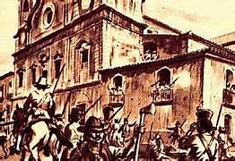

Retomada
Como já visto anteriormente,o Pará tinha fortes ligações com a coroa portuguesa,ligações essas que foram quebradas com a adesão em 1823. A expectativa era que as condições de vida finalmente fosse melhorar já que a região era livre,mas para a adesão ocorrer os governantes de origem portuguesa cederam fazer parte do Brasil somente se continuassem no poder,fazendo com que a mudança fosse apenas no papel.A população protestou por igualdade aos portugueses,mas a liderança os reprimiu causando o massacre do brigue-palhaço.
Resquícios de Vingança
uma década se passou,porém Batista Campos continua ofendendo o governo que se encontrava instável,pois Dom Pedro I não era mais imperador e seu filho Dom Pedro II ainda era uma simples criança.Mesmo assim,em 1833,os regentes (líderes do Brasil na época) colocaram um novo governador no comando;Lobo de Souza,o qual,reprimiu severamente qualquer critíca nos seus domínios. De cara Lobo criou o correio oficial paraense,jornal dirigido por Siqueira Queiroz,um antigo rival que criticava as ideias de Batista,o qual,logo revidou tocando na ferida do governador que era maçom (maçonaria:estilo religioso odiado pela igreja católica na época).Souza enfurecido ordena a prisão de Batista,o qual se refugia na fazenda do amigo Félix Clemenente Malcher,onde faz grandes alianças com os irmãos Vinagre (Manoel,Francisco e Antônio) e o jovem Eduardo Angelim.Cientes sobre a formação de um exército rebelde,tropas governamentais atacam a propriedade, matam Manoel Vinagre e prendem Félix.
A revolta

Era 31 de dezembro de 1834 quando Batista Campos morreu,há muitas incertezas sobre isso,algumas histórias dizem que foi somente azar ao cortar uma espinha,
outras que a lâmina estava envenenada,além dele possivelmente estar em péssimas condições de higiene devido a sua fuga,o fato é que Campos se feriu ao se barbear
e contraiu uma grave infecção,viendo a falecer.Uma peça importante caiu,mas isso não impediu,apenas acelerou o conflito,pois todos os meios
pacíficos de negociação já haviam se esgotado.
Na noite de 6 para 7 de janeiro,liderados pelos irmãos Vinagre,a população pobre que habitava em cabanas de palha se uniu,
fato esse que deu o nome a revolta,mas não só eles,escravos querendo liberdade,Indígenas reivindicando suas posses,ricos própietários,e não só homens,como
também mulheres se juntaram diretamente
a uma enorme multidão em meio as ruas e rios de Belém armada com paus,terçados,pistolas e tudo que se podia achar pela frente.
Noite de gala e terror
Com a distração da Noite dos Reis(data festiva da época,celebrava a visita dos Magos do Oriente a Jesus),os cabanos aproveitam as celebrações e a pouca vigilância nas docas para dividir o ataque em duas etapas:conquista e resgate.O maior desafio era libertar Félix Malcher,o qual não estava em uma prisão comum,mas no Forte do Presépio,local onde mais se acumulavam armas e tropas imperiais, o confronto foi sangrento,mas após triunfar os rebeldes vão em direção ao palácio da cidade(atual Museu do Estado do Pará),Lobo logo tentou fugir mas foi atingido,capturado e arrastado até o Ver-o-Peso,onde se seguiu por horas uma enorme festa para comemorar a vitória da Cabanagem e dar início a um novo governo cheio de desafios.